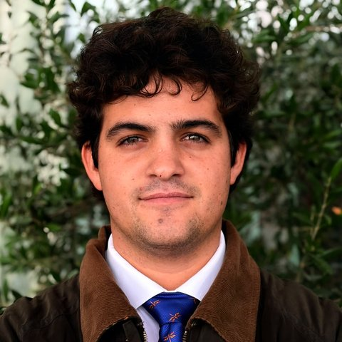

Sobre mí.
Estudiante en la Escuela Superior de Hostelería de Sevilla.
Soy Ignacio Díaz-Trechuelo Sánchez-Molini, estudiante de Gestión de Hotel y Empresas Turísticas, con formación en contabilidad y experiencia en cocina, sala, eventos y atención al cliente.
Desde 2019 compagino mis estudios con distintos trabajos. Mi objetivo es orientar mi carrera hacia la gestión gastronómica y hotelera. Actualmente desarrollo un proyecto propio de arroces para eventos.
Busco prácticas para el verano de 2027.

Experiencia.
Mi trayectoria profesional incluye experiencia en hostelería, catering, enseñanza de vela, ventas y supervisión de equipos. En 2025 trabajé en Wisconsin, Estados Unidos, donde fui ascendido a Lead y reconocido en varias ocasiones como Employee of the Week.
Actualmente trabajo en Catering Antonio Bort y desarrollo un servicio de arroces cocinados en directo para eventos privados en Sevilla y Huelva.
Formación e idiomas.
Estudio Gestión de Hotel y Empresas Turísticas y cuento con formación en contabilidad empresarial por la UNED. Hablo español nativo e inglés B2, con experiencia profesional en ambos idiomas.
Resido en Sevilla y dispongo de carné B y vehículo propio.
About.
Student at the Escuela Superior de Hostelería de Sevilla.
I am Ignacio Díaz-Trechuelo Sánchez-Molini, a Hotel and Tourism Management student with training in accounting and experience in kitchen and dining-room service, events and customer service.
Since 2019, I have combined my studies with different jobs. My goal is to pursue a career in food and beverage and hospitality management. I currently run my own rice-dish catering project.
Seeking an internship for summer 2027.
Experience.
My professional background includes hospitality, catering, sailing instruction, sales and team supervision. In 2025, I worked in Wisconsin, USA, where I was promoted to Lead and named Employee of the Week several times.
I currently work at Catering Antonio Bort and run a live-cooking service for private events in Seville and Huelva.
Education and languages.
I am studying Hotel and Tourism Management and have completed a micro-credential in Business Accounting at UNED. I speak native Spanish and B2 English, with professional experience in both languages.
I am based in Seville and hold a driving licence and own a car.